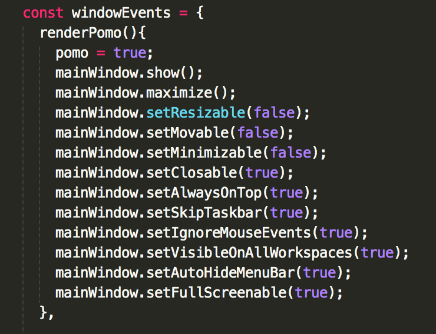
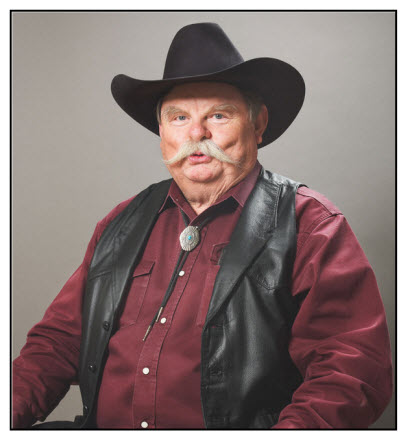
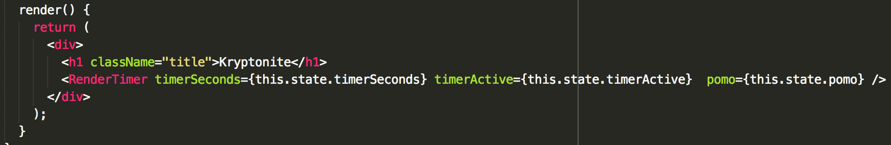
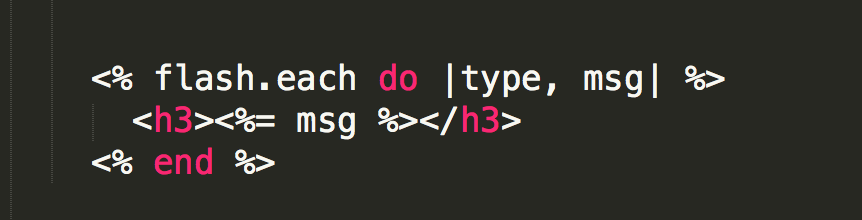
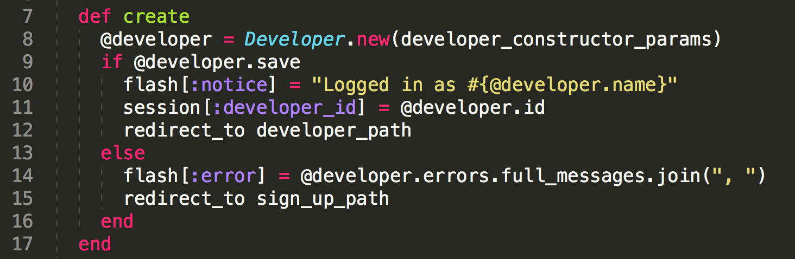
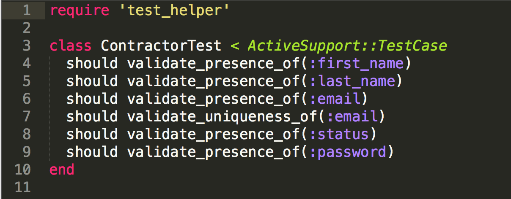

Biography. The life of the crow.
NOLS --> Ecuador --> University of Wisconsin --> City Year Denver --> Adventure Forward --> Turing School for Software and Design
Did some stuff, now it's web development or bust!

Creating a Terrible User ExperienceWith React & Electron
Do you love feeling powerless? Do you long for the feelings that arose when your computer used to freeze up decades ago? Me neither. But this is exactly what my new app called for...
Pomodoros have been a hot trend in programming recently, a concept that encourages taking 5 minute breaks for every 25-30 minutes worked. This concept is solid - maxmize the productivity, while building in breaks for fresh outlooks on those hard to solve problems. Unfortunately, I suck at obeying these concepts, and so does my teammate, Jordan Lawler.
Without fail, we've managed to justify working through pomodoro breaks when the timer goes off. Common phrases include:
"Just after I fix this one thing."
"After this commit."
"Let's take a break after we refactor..."
This unhealthy delusion encouraged us to set out on a quest to develop the worst possible user experience of all time. An app that takes over your screen and leaves you powerlessly watching a countdown with no choice but to take a break. An app we call, Kryptonite.
The New Frontier: React & Electron
With no previous knowledge of React and having never heard the term electron outside of scientific context, we were tasked to create an app that used these two frameworks (I use that term loosely). Within the first 30 minutes we were abusing the power of Electron. We knew we had the correct tool upon discovering the Browser Window events. If you look here, you'll find a lot of examples of restrictions you'll probably never want to place on your user.

Figuring out these window events was like bringing home an ugly misbehaved rescue dog for a week just to see how things go. You damn well know you can't give it back, but you still have to justify why it's worth keeping. This ugly little monster from the pound gifted us the ability to lock users out of their computers, and we were determined to justify it.
We decided to add value to the world by forcing users to take breaks, while giving them the option to opt-out. Originally we planned to feature an opt out button during a pomodoro. This would track how many seconds remain of your 300 second (5 minute) break, then donate that amount of cents to a charity. But we were retreated on that idea because we doubted that users would want to enter their credit card information upon signing up.
Instead we opted for a cryptological approach - allow users to exit the screen, but make it a huge pain that takes time. This provided a solution for users that need to utilize their computer in an emergency, and will probably prevent lawsuits if the app goes live. For example, on a pomodoro break the app presents a prompt with the leading words of a long speech. The user, who does not have access to the internet and cannot copy and paste the answer, must physically type out the answer. Would you rather take a 5 minute break, or spend 5 minutes researching Viper's Top Gun Speech on your phone and then physically typing it in? We thought this was an effective solution.
Explaining React with Bolo Ties
React is fascinating, even when you don't entirely know how to use it. I'm going to explain the concept with a story.
Imagine you're a teenager and the middle of three boys. You're definitely the experimental free spirit of your family. Your annoying little buck-toothed brother wants nothing more than to be you. If you start wearing an eye-patch while watching Saturday Morning re-runs of "The Price is Right", he'll run to his room and grab the eye-patch from his birthday party at Pirate's Cove miniature golf and slap it on his face. So you say, "STOP LOOKING AT ME" and carve a Slayer tattoo into your neck. Well, you idiot, now your 5th grade brother has a slayer tattoo carved in his neck and your mom is going to be pissed.
Now, computer stuff. You are the trend setter and you represent the virtual DOM (Document Object Model). Your little brother is the original DOM that pays meticulous attention to whether any aspect of your appearance changes and follows your lead. If you change one component of appearance, your little brother catches it, and changes only that aspect of himself.
Extending on this analogy
Your appearance is made up of a bunch of components. Your cowboy boots, belt buckle, Canadian tuxedo, mullet, and eye patch compose your entire appearance. Your brother is obviously wearing the same thing. Now let's say one day you step up your badassery and add a bolo tie into the mix. Does your brother have to change his entire outfit? HELL NO! He only has to keep wearing what he already has on and add the component of your atire that has changed - the bolo tie. This is the beauty of React.
That story illustrates that it doesn't make much sense to change an entire outfit just to add a bolo tie, but thats what happens in frameworks that make a HTTP request each time any aspect of the DOM element changes. Retrieving ALL of the data from the DOM is like saying, go back into your room, take off your outfit, and put on the same outfit plus a bolo tie. In contrast, React hands you a bolo tie, says Godspeed, and let's you put in on in the kitchen without changing outfits. As the documentation reads:
The way we are able to figure this out is that React does not manipulate the DOM unless it needs to. It uses a fast, internal mock DOM to perform diffs and computes the most efficient DOM mutation for you.
This is another way of saying, React is going to take a look at what data has changed, and re-render only the aspects that are reliant on this data change.
So yeah, I guess what I'm trying to say is that React only cares about bolo ties. It knows you're going to wear that red shirt and vest to your grave, so it isn't going to expend any energy helping you pick out a shirt & vest.
States of Confusion, and Props Too!
Finally, it would be irresponsible if I didn't impart my wisdom of state after three whole days of working with React.
The components of your outfit define the state of your identity at this specific point in your life. The components are also what your little brother uses to compare what's different, but how does he know what components make up your identity? Duh! you share your attributes and stunning features every time you step out of your bedroom. The example below showcases the attributes that define the state of the application. Currently, timerActive is set to false, but we can pass this to other components of our application and even alter its value.
So how does this relate to React? These attributes (state and props) are what define the most important data of our application. State is reserved for data that may change throughout the application, such as toggling between whether timerActive = true or timerActive = false. Props are reserved for more persistent aspects, such as functions that need to be passed down but probably shouldn't change. Once again, state = data that changes, props = information that shouldn't change. You can update state by calling this.state.$$$attributeName$$$ = true. Later, you can alter this value. The code is from an app that has components that will conditionally render a timer based on whether or not the timerActive is true. Thereby, referencing a top level component's state allows us to use or redefine a value that lives in one convenient place. Managing these values is much simpler when know where they live.
So how do child components know the state of the overall parent object? You deliberately pass along certain attributes of your state to lower components. This time, replace your little brother with a bastard child, because the element is actually a child (not a sibling) in nerd talk. Each time you incoporate a child component at the top level, you have the opportunity to pass individual attributes of your state to that child. You also get to name that bastard. This is like being able to hide tattoos from your brother that he doesn't need to know about, but still be able to deliberately passing him the secret to great hair. See the example below.
Now, once you get to the child component, which is RenderTimer in this case, you will have access to the state attributes from the first image. But what happens if you access this information by calling this.state.active in the child element? BAD NEWS! because you're trying to access the state of a parent component, NOT the state of the component you are in. This is where props come in. Call the attribute of the parent's state by using props.
Within Parent Component: this.state.active => returns true
Within Child Component: this.props.active => returns true
Now this assumes two things. 1. You remembered to pass in the state to the child component & 2. You named the key that points to the state attribute as active (when it could be anything, even "tuttles")
Hopefully this has helped you wrap your head around React just a bit better. If not, hopefully some tutorials will clear things up for you! Stay tuned!
Capybara testing interact like your audience!
You've made a website, but how do you test it from an end-user's perspective? Checkout Capybara!
In short, Capybara is a ruby gem that allows developers to write tests that interact with a web application like a user. You can perform quality control and simulate user interaction by clicking buttons & links, filling in forms, and navigating through the site.
First, take a peek at some of the basic commands. For more commands, checkout out this cheatsheet.

The image below shows what testing looks like in practice with a user story framework. In this example we are able to navigate to a page, click a link, fill in a form, submit the form. Then we verify our input using the Capybara specific test assertion "has_content?"
Take special note of the within command, which is used to define the scope of the code you interact with. In this example, within uses a loop to reference only the form that has the CSS id of "edit_form." This is especially important if you have multiple forms, links, or buttons on the same page.

If you're still getting an Ambiguous match error, your first instinct should be to scope with greater specificity. Create a unique CSS identifier and use a within loop.
This is a more specific example of scoping from a different project. Notice how we find the ordered list (ol) with the id of #most_pop_referrers_list. Then we further specify that we want the list item's (li) nth-child(#), where # is the number of the list element. For example, 'ol#most_pop_referrers_list li:nth-child(1)' will scope the second element of the list. Then it will check for the turing url: "http://turing.io (2)"

Installation: Make sure you have the Capybara gem installed and bundled in your test/development environment. If you are using Rails with MiniTest, head to your test_heler.rb file. Require 'capybara/rails' at the top. Next, define a class that inherits from Minitest, and include Capybara::DSL. Note that in the first test above, the UserEditsTask testing class inherits from FeatureTest as opposed to Minitest::Test. That's because the FeatureTest inherits from Minitest, thus it includes Capybara::DSL.

Pro Tip: The most frustrating error with Capybara is generally due to scoping issues. Head to your Gemfile and require the gem 'launchy' in your test development environment. Next, insert save_and_open_page into your test (before it fails) and run your test. Launchy will open a display page in your browser so you can see what's happening. Next, right click on the area you're interested in and select "inspect element." This will give you access to the CSS components you can use for scoping.
There's more to explore with Capybara, but hopefully by now you understand that it can be a powerful tool for feature testing.
Shoulda Matchers Simplify Validation Tests
Are you sick of writing tests to validate your models, or just gifted with solid one-liners? Check out shoulda-matchers!
Shoulda matchers is a gem that allows developers to simplify validation testing with a new suite of testing methods called matchers. Accordingly, validations can generally be tested in one clean line rather than lengthy, redundant tests.
First, take a peek at the matchers methods you will use in your specs. Checkout out the cheatsheet too.

Now for an example. We define our validations in the model. The goal here is to ensure that a Resort Object can not be added to the database unless it meets all of the criteria defined in the validations. Ideally, we want Rails to throw an error if any of the validations aren't met.
In each model, we define the validations. Each Resort Object must have the presence of a name, image_path, trail_map_path, etc. Further, the name, image_path, and trail_map_path must be unique in this scenario.

These validations are fantastic if they work, but we want to verify our verifications with some tests in the resort_spec.rb (resort_test.rb in MiniTest). Without Shoulda Matchers, we would have to write specific tests for each validation that fulfill all of the criteria except for the validation we want to test. This is cumbersome and violates the DRY principle. Shoulda Matchers allows a uniform, clear, and short format. The following example is an RSpec example, but it's rather boring because the tests all pass. All of the validations are fulfilled.

Now, the main event! We are more interested in what happens to the site when all of the validations are NOT fulfilled. If a Resort Object is created or updated, but doesn't meet these specifications, we want a test to fail and notify you of the missing or incorrect attribute.
Notice that we have a validation for :something_that_doesnt_exist. The test will fail because we are expecting a Resort Object to have this attribute, but it doesn't exist in the schema, nor is this attribute ever associated with the Resort Object. The error is apparent in the failed test in the second image.


Shoot! Now you have your models validations, test validations, and a failing test, but you're still getting an error message like the one below! The reason is that Shoulda Matcher validations expect(RSpec) or should(MiniTest) display an error.

In practice, I prefer to add flashes to display messages during sad path tests. If a new object is being created but doesn't save because it fails a validation, I want a particular error to show up.
First, add flashes to your app/layouts/application.html.erb file somewhere in the body section. The standard is to place these above the <%= yield %> so it catches the users eye when a form or other information if filled out incorrectly.

Then add flash messages into your controller when you want them to be displayed. Disclaimer, this is from a different, top secret project.

Another option is to display the error messages directly in the layout/applicaiton.html.erb file.

Pro Tip: Remember to update your strong_params private methods if you start requiring an attribute that wasn't previously part of a form or is new to the schema. I spent about an hour tracing a bug back to the fact that I hadn't updated the permitted attributes.
Installation:
For RSpec: First, place gem 'shoulda-matchers' in the test environment of your Gemfile. Don'f forget to Bundle. Then head over to your rails_helper.rb file and insert the following lines of code. Don't forget to add the error flashes in your controllers as you proceed.

If you are using MiniTest, you will need to install both:
gem 'shoulda', '~> 3.5'
gem 'shoulda-matchers', '~> 2.0'
MiniTest does not require any additional setup once these two gems are installed and bundled. The functionality is the same, except you will use "should validate..." in place of the "it {is_expected_to validate...}." Don't forget to add the error flashes in your controllers as you proceed.
Pro Tip: If you are using MiniTest, DO NOT put the validations inside of a test. Nest them right under the model or you will get an error along the lines of "undefined method: should." See the example below.

Amazon Web Services S3 Cloud Storage for Images
If your Paperclip images won't persist on you website, integrate AWS C3!
Shoulda matchers is a gem that allows developers to simplify validation testing with a new suite of testing methods called matchers. Accordingly, validations can generally be tested in one clean line rather than lengthy, redundant tests.
First, take a peek at the matchers methods you will use in your specs. Checkout out the cheatsheet too.
Now for an example. We define our validations in the model. The goal here is to ensure that a Resort Object can not be added to the database unless it meets all of the criteria defined in the validations. Ideally, we want Rails to throw an error if any of the validations aren't met.
In each model, we define the validations. Each Resort Object must have the presence of a name, image_path, trail_map_path, etc. Further, the name, image_path, and trail_map_path must be unique in this scenario.
These validations are fantastic if they work, but we want to verify our verifications with some tests in the resort_spec.rb (resort_test.rb in MiniTest). Without Shoulda Matchers, we would have to write specific tests for each validation that fulfill all of the criteria except for the validation we want to test. This is cumbersome and violates the DRY principle. Shoulda Matchers allows a uniform, clear, and short format. The following example is an RSpec example, but it's rather boring because the tests all pass. All of the validations are fulfilled.
Now, the main event! We are more interested in what happens to the site when all of the validations are NOT fulfilled. If a Resort Object is created or updated, but doesn't meet these specifications, we want a test to fail and notify you of the missing or incorrect attribute.
Notice that we have a validation for :something_that_doesnt_exist. The test will fail because we are expecting a Resort Object to have this attribute, but it doesn't exist in the schema, nor is this attribute ever associated with the Resort Object. The error is apparent in the failed test in the second image.
Shoot! Now you have your models validations, test validations, and a failing test, but you're still getting an error message like the one below! The reason is that Shoulda Matcher validations expect(RSpec) or should(MiniTest) display an error.
In practice, I prefer to add flashes to display messages during sad path tests. If a new object is being created but doesn't save because it fails a validation, I want a particular error to show up.
First, add flashes to your app/layouts/application.html.erb file somewhere in the body section. The standard is to place these above the <%= yield %> so it catches the users eye when a form or other information if filled out incorrectly.
Then add flash messages into your controller when you want them to be displayed. Disclaimer, this is from a different, top secret project.
Another option is to display the error messages directly in the layout/applicaiton.html.erb file.
Pro Tip: Remember to update your strong_params private methods if you start requiring an attribute that wasn't previously part of a form or is new to the schema. I spent about an hour tracing a bug back to the fact that I hadn't updated the permitted attributes.
Installation:
For RSpec: First, place gem 'shoulda-matchers' in the test environment of your Gemfile. Don'f forget to Bundle. Then head over to your rails_helper.rb file and insert the following lines of code. Don't forget to add the error flashes in your controllers as you proceed.
If you are using MiniTest, you will need to install both:
gem 'shoulda', '~> 3.5'
gem 'shoulda-matchers', '~> 2.0'
MiniTest does not require any additional setup once these two gems are installed and bundled. The functionality is the same, except you will use "should validate..." in place of the "it {is_expected_to validate...}." Don't forget to add the error flashes in your controllers as you proceed.
Pro Tip: If you are using MiniTest, DO NOT put the validations inside of a test. Nest them right under the model or you will get an error along the lines of "undefined method: should." See the example below.
Project I Adventure Forward.
Want to help underserved students get their first mountain experiences?
Adventure Forward --> The first organization to combine classroom support with Adventure Education. Click the logo to see what we do!

Project II SkiBoarding 3.0.
Let's see what gifts El Niño brings. Start the pow wow with this segment from Into the Mind - Crows and Big Lines.